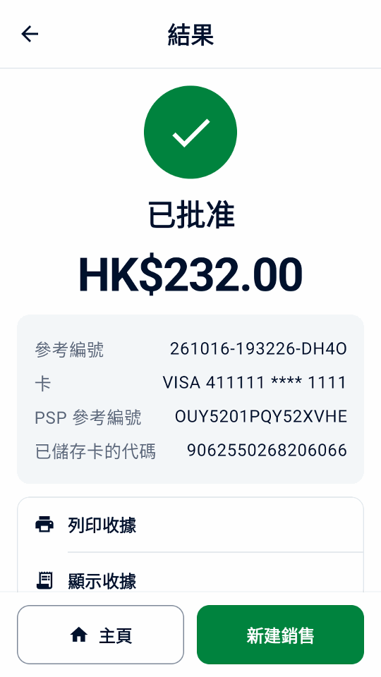

指南
體驗示範
無需 Adyen 帳戶或付款終端機，即可體驗示例銷售、收據和退款。
安裝應用程式
請使用 Android 9 或以上版本的手機或模擬器。
- 在裝置上打開直接下載連結，或用相機掃描此二維碼：

- 在設備上打開 APK，按 Android 提示允許瀏覽器或檔案管理器安裝應用程式。
- 在歡迎畫面選擇 試用示範，然後點按 繼續。
體驗銷售和退款
- 在首頁點選 新建銷售，選擇一個示例商品。
- 點選 收款，核對總額後點選 支付。
- 查看收據。
- 開啟 交易紀錄，選擇該筆銷售並點選 退款。選擇全額退款並確認。


探索更多示範情境
- 在設定 › 模擬器中選擇支付結果、延遲以及是否有打印機。開啟離線批准後，可在交易紀錄和 終端對帳中查看離線警告。
在設定 › 資料與轉移中可新增示例資料或刪除示例資料。示例會標為演示。 示例計入演示每日總計和報告；新增示例會以虛構咖啡店取代收據商戶資料， 並於未設定標誌時新增其標誌；刪除示例會保留您自己的商品、交易紀錄、設定和標誌。
付款連結無需 API 憑據即可離線使用，其頁面和收據都標為演示。這些二維碼無法收款；點按模擬支付即可完成演示。
模擬器展示的是 Mini mPOS 的運作方式，而不是您的終端或 Adyen 帳戶支援甚麼。語音引導、離線批准和 Adyen 功能等只是模擬， 請在真實的 TEST 終端上測試後再使用。
示範亦會在結帳時提供終端小費和 Adyen Giving（開關預設關閉），並在禮品卡中提供 SVS 禮品卡。示例交易紀錄包含小費、捐款、離線批准，以及為客戶參考編號 CUST-1042 儲存的卡，可在代碼中 扣款。在設定 › 模擬器中設定附加費，或將部分批准（%）設為低於 100，即可試用這些流程；為 100 時，金額末尾為 139 的付款會部分批准，與 Adyen 測試卡相同。設定真實付款時，除非您選擇 保留，Mini mPOS 會提示關閉這些示範功能。
繼續設定真實連線
準備連接時，在設定 › 模擬器中依次點按設定真實付款和繼續設定。確認 TEST 或 LIVE 會刪除所有本機記錄；示例商品和收據資料會保留，因此請在真實付款前移除示例並檢查商戶資料。先使用 TEST 測試。